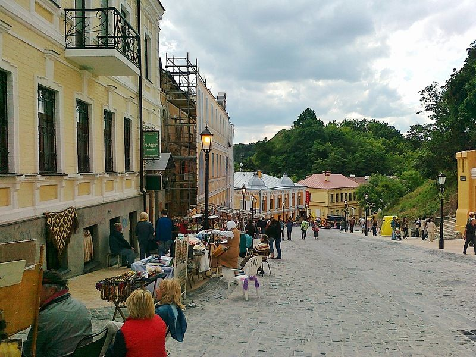
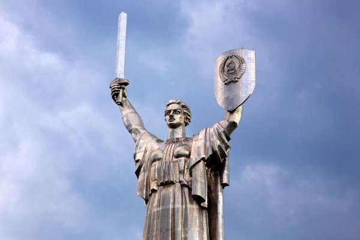
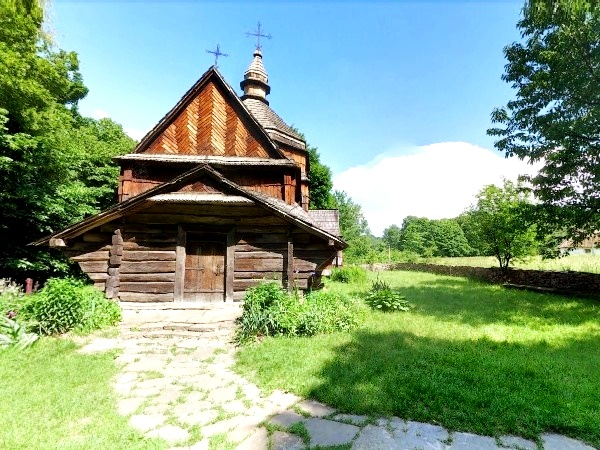
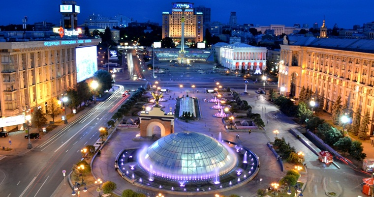
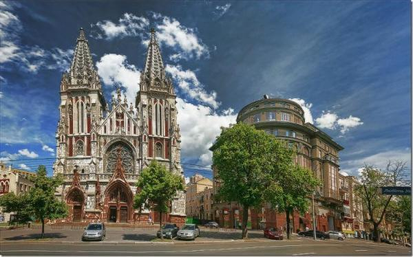
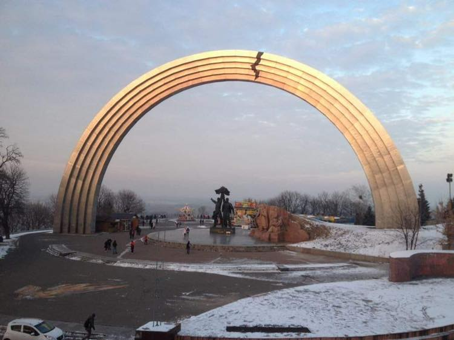
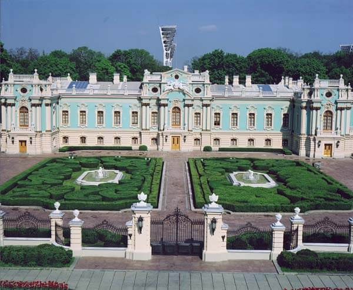
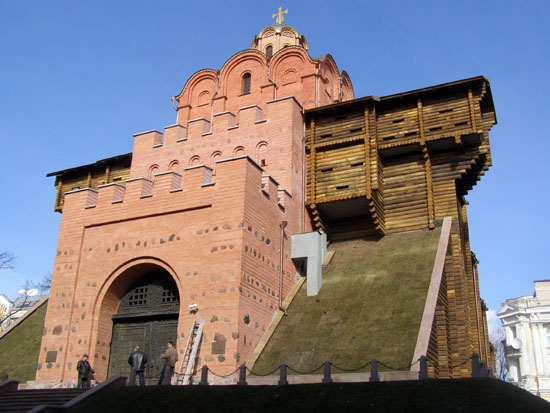
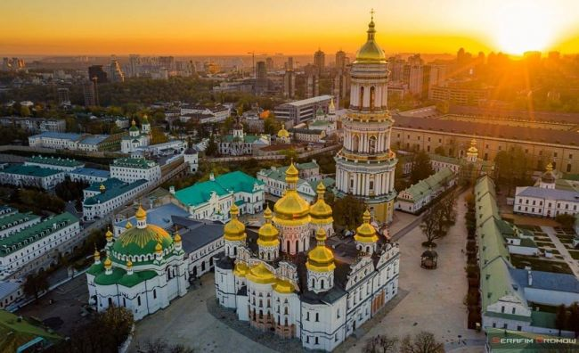

Андріївський узвіз
Андріївським узвозом називають мальовничу вулицю Києва, яка була найстарішим шляхом, що з'єднує важливі торговельні території. Свою назву це цікаве місце Києва отримало від Андріївської церкви (зведеної у середині 18 століття), котра розташована вгорі узвозу. На звозі, безсумнівно, є на що поглянути. Саме тут ви зможете зануритися в атмосферу старовини, затишку та долучитися до незвичайної історію, яка панує тут на кожному кроці. Вашій увазі постануть чудові архітектурні шедеври, легендарні провулки та площі, а також такі культурні заклади, як Музей Булгакова та Музей однієї вулиці.
Адреса: Київ, вулиця Андріївський узвіз.
Як дістатися: від станції метрополітену "Контракт. Площа", пройшовши Успенський храм або від станції "Поштова Площа", а далі спуститися по вулиці Трьохсвятительській.
Батьківщина-Мати
Батьківщина-мати — популярне місце в Києві, яке є грандіозним монументом, зведеним на правобережжі Дніпра в 1981 році. Це шістнадцятий за своєю висотою пам’ятник світу. Пам'ятник присвячений героям Великої Вітчизняної війни. Він вражає своїми величезними розмірами і оточений мальовничим парком, в якому із задоволенням гуляють дорослі і діти. Крім того, тут можна відвідати цікаву музейну експозицію про історичні факти військових діях 1941-1945 років.
Адреса: Київ, вулиця Івана Мазепи, 33.
Як дістатися: від станцій метрополітену "Дніпро", "Печерська" або "Дружби народів".
Вартість відвідування: за підняття на щит попросять заплатити близько 200 гривень, а на нижній оглядовому майданчику можна опинитися за все за 50 гривень.
Музей-скансен Пирогово
У селі Пирогово також є що подивитися в Києві. Це мальовнича місцевість, що має високу історичну цінність. Свою назву вона отримала від села, яке існувало на цій території з 17 століття. Тут можна відвідати Музей народної архітектури та побуту, що знаходиться під відкритим небом, ознайомитися з чудовими пам'ятками та пам'ятниками культури і історії різних регіонів нашої країни.
Адреса: село Пирогово.
Як дістатися: тролейбусом під номером 11 від станції метро "Либідська", маршруткою номер 156 - від Бессарабського ринку, маршруткою номер 496 від станції метрополітену "Лук'янівська" і т.д.
Вартість відвідування: для дорослих - від 30 гривень, для школярів — від 15 гривень.
Майдан Незалежності
Майдан Незалежності або в простолюдді Майдан наразі є легендарним місцем в Києві. Не дивлячись на останні події в нашій країні, які завдали значної шкоди архітектурному ансамблю цієї пам'ятки, її все ж варто відвідати. Площа знаходиться між найпопулярнішою вулицею столиці Хрещатиком, вулицями Софіївскою, Інститутською, Б.Грінченка та інших. Не втрачайте можливості відчути дух недавніх і історично значущих подій для України!
Адреса: місто Київ, Майдан Незалежності
Як дістатися: станція метрополітену "Майдан Незалежності".
Миколаївський костел
Величний і таємничий в своїй архітектурі Миколаївський костел не може не викликати щирого захоплення. Можна годинами милуватися на його вигадливі візерунки, проникаючи вглиб століть. Він являє собою римсько-католицький храм, присвячений Святому Миколаю. З 1980 року в його будинку розміщується Будинок камерної та органної музики. Одне з тих місць, які варто відвідати в Києві.
Адреса: Київ, вулиця Велика Васильківська, 77.
Як дістатися: до станції метрополітену "Республіканський стадіон", а далі по вулиці Велика Васильківська.
Вартість відвідування: ціна квитків на концерти варіюється від 30 до 200 гривень.
Арка Дружби народів
Арка Дружби народів — дивовижне архітектурне творіння, яке прикрашає Хрещатий парк з 1982 року. Монумент споруджено на честь возз'єднання Росії та України. Містить він три мальовничих елемента: величезну арку, що має форму веселки, скульптурні композиції з бронзи, що зображують трудящих і гранітні скульптури фрагмента зі сцен легендарної Переяславської ради.
Адреса: Київ, Європейська площа, на території Хрещатого парку.
Як дістатися:доїхати до станції метрополітену "Майдан Незалежності", після чого дійти до площі Європейської.
Маріїнський палац
Один з найкрасивіших архітектурних шедеврів столиці, Маріїнський палац, розташований на правобережжі річки Дніпро. У його розкішних приміщеннях розміщується резиденція українського президента, де проводяться знатні прийоми і урочисті церемонії державного значення. Архітектурний стиль палацу — бароко. Наказ по його будівництву в 1744 році видала сама імператриця Єлизавета.
Як дістатися:проїхатися на метро до станції "Арсенальна", де на однойменній площі повернути на вулицю Грушевського.
Вартість відвідування: екскурсії по палацу проводяться за індивідуальними замовленнями, їх мінімальна вартість 300 гривень.
Золоті ворота
З часів правління Ярослава Мудрого прекрасно зберігся архітектурний та історичний пам'ятник — Золоті Ворота. Він може розповісти найцікавіші факти про оборонну архітектуру того часу. Тоді спорудження представляло собою грандіозну фортецю, що має широкий проїзд. Оцінити всю велич вежі, можна тільки при її відвідуванні. В даний час в будівлі Золотих воріт працює цікава музейна експозиція.
Адреса: Київ, вулиця Володимирська, 40а.
Як дістатися: пам'ятка знаходиться біля станції метрополітену "Золоті ворота".
Вартість відвідування: від 10 гривень.
Софійський собор
Що подивитися в Києві ще? Дивовижний Софійський собор стане найкращим місцем для цінителів релігійних та історичних пам'яток. Споруда була зведена в 11 столітті в центральній частині столиця за указом Ярослава Мудрого. Пізніше собор перебудували і надали йому елементів українського бароко. Відвідавши храм, ви побачите велику кількість найдавніших фресок, неповторних музичних зображень, серед яких легендарна мозаїка під назвою Богоматір Оранта.

Адреса: Київ, вулиця Володимирська, 24.
Як дістатися: вийшовши зі станції метро "Золоті ворота" прямуйте по Володимирській вулиці до площі Софіївській.
Вартість відвідування: екскурсії для дорослих - від 40 гривень.
Києво-Печерська Лавра
Кожен українець, без сумнівів, чув про Києво-Печерську Лавру — грандіозний архітектурний, історичний та релігійний пам'ятник Києва. Він являє собою найдавніший монастир Русі, зведений в 1051 році. Пам'ятка відома своїми дивовижними храмами та церквами, таємничими печерами з мощами святих, мальовничими вежами та іншими цінними спорудами. Щорічно десятки тисяч паломників їдуть сюди за божественним благословенням.
Адреса: Київ, вулиця Івана Мазепи, 25.
Як дістатися: від станції метрополітену "Арсенальна" доїхати до Музею ВВВ або до Києво-Печерського заповідника.